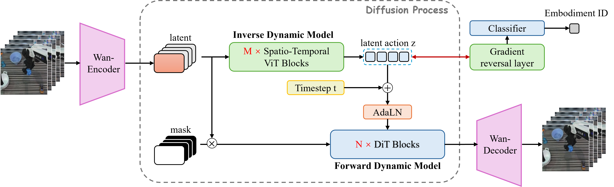

Anti-Diversity is All You Need to Get a Unified Latent Space
Two decades of identifiability theory share one engine: the diversity of an auxiliary variable is the signal that pins down the latent. But when that variable is a nuisance (domain, sensor, style, embodiment), you want the latent to be invariant to it, not aligned with it. The same machinery runs in reverse by a single sign change. This is a high-level walkthrough of the intuition and the proof sketch.
There is a received wisdom in representation learning: to identify a meaningful latent space, you need diversity. More environments, more views, more interventions, more classes. The intuition is sound, since diversity exposes structure by ruling out alternatives, and it is backed by a long line of theorems. This post is about the case where that wisdom flips. When the diverse variable is something you want to forget, the right move is not to embrace its diversity but to cancel it. I call that anti-diversity. The point is that the same cross-entropy machinery that aligns a representation with an auxiliary variable will, with one sign flipped, make the representation invariant to it, and provably so.
1. The received wisdom: identifiability needs auxiliary diversity
Start from the hard fact that motivates the whole field: without inductive bias, unsupervised disentanglement is impossible (Locatello et al., 2019). You cannot pull the true factors of variation out of i.i.d. samples alone, because infinitely many equally good latent representations explain the same data. Something has to break the symmetry.
The field's answer has been an auxiliary variable $u$ that the latents are conditioned on: a time index, a class label, an environment ID, an augmentation, an intervention. Across nonlinear ICA, contrastive learning, and causal representation learning, the identifiability theorems all share one template. Collect one equation per value of $u$, stack the resulting difference vectors into a matrix, and the conclusion is simple.
The cleanest statement of this is the Assumption of Variability of Hyvärinen, Sasaki, and Turner (2019): for an $n$-dimensional latent, you need $2n+1$ distinct values $u_0,\dots,u_{2n}$ such that the $2n$ difference vectors of the conditional log-density derivatives,
The same counting condition recurs everywhere, only the number changes: $n{+}1$ segments in time-contrastive learning (Hyvärinen and Morioka, 2016), $nk{+}1$ anchor points in iVAE (Khemakhem et al., 2020), $K \ge M{+}1$ labels for linear identifiability (Roeder et al., 2021), roughly one intervention per latent in interventional causal representation learning (Ahuja et al., 2023; Squires et al., 2023; von Kügelgen et al., 2023). My own recent work on factored generative models leans on the same idea, asking the generator's mechanism to vary in $2d_z{+}1$ linearly independent ways across the conditioning signal. In every case, diversity is the resource that buys identifiability.
2. The foil: minimize cross-entropy ⟹ align ⟹ recover up to linear
The modern instance this post's title is riffing on is Reizinger et al. (2024), "Cross-Entropy Is All You Need To Invert the Data Generating Process." Their claim: minimizing softmax cross-entropy on an almost arbitrary classification task is already enough to recover the ground-truth latent factors up to a linear transformation.
The geometry is what matters for us. Model the latent (or an action coordinate) $\tilde a$ as living on a sphere, with each value $e$ of the auxiliary variable giving a von Mises-Fisher cluster around a center $v_e$:
Minimizing cross-entropy against $y$ drives the encoder so that its log-odds match the cluster geometry. Concretely the optimum forces, for every pair of classes, an identity of the form
Ranging over the cluster differences $\{v_c - v_{c'}\}$, which span a subspace $V$, pins $h$ down to be linear. The encoder's row space lands inside $V$: it aligns with exactly the directions the auxiliary variable controls. This is the left panel of the figure. It works because the clusters are diverse. Reizinger's "affine generator" condition is just the requirement that the $\{v_c\}$ are numerous and spread out enough to span. Same diversity engine, dressed as classification.
3. But what if the auxiliary variable is a nuisance?
Every method so far treats $u$ as signal, something you want to read off the representation. But very often $u$ is the opposite: a nuisance you want the latent to be blind to. The domain a photo came from. The sensor that recorded it. The artistic style. The robot body that executed a motion. Here the goal is not alignment but invariance:
The practitioner's tools for this already exist. Domain-adversarial training (Ganin and Lempitsky, 2015) attaches a domain classifier through a gradient-reversal layer (identity on the forward pass, gradient multiplied by $-\lambda$ on the backward pass), so the encoder is trained to make domains indistinguishable. Invariant Risk Minimization (Arjovsky et al., 2019) asks for a representation on which the optimal predictor is simultaneously optimal across all environments. Both consume the diversity of $u$, but spend it on forgetting rather than aligning.
What these methods give you operationally is invariance. What they do not give you is an identifiability guarantee, a statement that the latent you are left with is the right one, recovered up to a benign equivalence. That gap is what the next two sections close. The same vMF cross-entropy argument, run with the sign reversed, turns gradient reversal from a heuristic into a theorem.
4. The flip: maximize cross-entropy ⟹ drive $I(y;\hat z)$ to zero
Intuition
Take Reizinger's exact objective and reverse the encoder's gradient. The classifier $D_\omega$ still minimizes cross-entropy, staying as sharp as Bayes allows, while the encoder $f_2$ now maximizes it. The encoder is rewarded for making the nuisance label as unpredictable as possible from its output. That is "anti-diversity": instead of letting the diversity of $u$ shape the latent, you penalize the latent for carrying any of it.
Proof sketch
Why does maximizing a classification loss do something so well-behaved? Decompose the cross-entropy. For any encoder, the inner classifier's best response is the Bayes posterior, and at that best response the loss equals the conditional entropy $H(y\mid\hat z)$. Using $H(y\mid\hat z)=H(y)-I(y;\hat z)$ and that $H(y)$ is fixed by the data, the whole minimax game collapses to a single quantity:
Mutual information is non-negative, and it is zero exactly when $\hat z \perp\!\!\!\perp y$. So the encoder, by maximizing cross-entropy, is simply driving the mutual information between its output and the nuisance to zero. Gradient reversal is not a heuristic here. It is the identifiability objective written backwards. The remaining question is geometric: which encoders actually achieve $I=0$?
5. The theorem (sketch): invariance forces the encoder into $V^\perp$
Intuition
The cluster centers $\{v_e\}$ differ from each other only along a subspace $V=\mathrm{span}\{v_e-v_{e'}\}$. That subspace is the nuisance: it is the only part of the action space where embodiment, domain, or style leaves a footprint. If the encoder's rows have any component in $V$, the classifier can exploit it and $I(y;\hat z)>0$. The only way to be invariant is for the encoder to live entirely in the orthogonal complement $V^\perp$, and that turns out to be enough to also recover the latent, not just hide the nuisance.
Proof sketch
Restrict to a linear encoder $f_2(\tilde a)=M\tilde a$ and push the vMF cluster through $M$. A linear image of a vMF has a moment-generating function that, by the rotational invariance of the sphere, depends on the class $e$ only through the vector $Mv_e$. (The integral over the sphere depends on a direction only through its norm, and that dependence is strictly monotone, so no information leaks except through $Mv_e$.) Now impose the invariance we just earned, $\hat z\perp\!\!\!\perp y$: the distribution of $M\tilde a$ must not depend on $e$ at all. That forces the key identity,
Every cluster center maps to the same point, which is the right panel of the figure. A dimension count finishes it: the encoder has rank $d_z$, and $\dim V^\perp = d_a - \dim V = d_z$, so the inclusion becomes an equality, $\operatorname{row}(M)=V^\perp$, with $\ker M = V$ exactly. The encoder does not merely avoid the nuisance subspace. It spans the complement, losing nothing else.
The last step is recovery. The per-class map $\Phi_y(z) = M\big(\rho(h(z,y))\big)$ is a continuous injection from the $d_z$-dimensional latent manifold into $\mathbb{R}^{d_z}$. By Brouwer's invariance of domain, a continuous injection between equal-dimensional spaces is a homeomorphism onto its image, so $\Phi_y$ is a continuous bijection, and all the $\Phi_y$ push the same prior to the same marginal. The invariant latent is identified up to a benign per-value bijection.
The one-line contrast with the foil: same vMF, same cross-entropy, same affine-generator geometry. The only new ingredient is the outer sign reversal, which lands the encoder in $V^\perp$ instead of $V$.
6. An aside: where does $\tilde a$ come from?
The argument above starts from an action coordinate $\tilde a$ already related to the ground truth. That does not fall from the sky, so one honest stage precedes it. Suppose the observable carrying the nuisance is itself recoverable, for instance by an inverse-dynamics model fit against a reconstruction objective $\mathcal{L}_{\text{rec}}=\mathbb{E}\,\lVert s_{t+1}-\tilde g_\theta(s_t,\,\mathrm{IDM}(x_t,x_{t+1}))\rVert^2$. Then a short chain of invertibilities (the render map is injective, the forward dynamics is injective in the action, and Brouwer's theorem links them) gives
Nothing here is robot-specific. Any setting where the nuisance-bearing observable is identifiable up to a bijection plugs into the second stage unchanged. Stage 1 gives you a faithful coordinate. Stage 2, the gradient-reversal game, strips the nuisance out of it.
7. SCAR: embodiment is just one instance of the nuisance
Make the abstract nuisance concrete and you get SCAR (Liu et al., 2026), a cross-embodiment robotics paper led by Hongjia Liu that this analysis is drawn from. Different robots, such as a Franka arm, an ALOHA bimanual rig, or a Procgen agent, execute the same manipulation skill with their own action vocabularies. The embodiment ID $e$ is the textbook nuisance: you want a unified latent action that captures the controllable change shared across bodies, blind to which body produced it. Set $u=e$, run the gradient-reversal game on an embodiment classifier, and the theorem above yields a unified latent action space invariant to embodiment.

One honest caveat, worth stating because it is easy to overclaim. The recovery in §5 is per-value: each $\Phi_e$ is a bijection, but the family may differ across embodiments. Transferring a latent action from body $e_1$ to body $e_2$ therefore needs the alignment map $\Phi_{e_2}\!\circ\Phi_{e_1}^{-1}$ learned from paired data, or an extra separability assumption that makes the $\Phi_e$ coincide. The theorem buys invariance and per-body identifiability. It does not, by itself, hand you zero-shot cross-embodiment transfer for free.
8. Takeaways: when to align, when to anti-align
The whole story is one mechanism with a sign. Ask a single question of your auxiliary variable: is it signal or nuisance?
| Auxiliary $u$ is signal | Auxiliary $u$ is nuisance | |
|---|---|---|
| Objective | minimize cross-entropy | maximize cross-entropy (gradient reversal) |
| Encoder lands in | $V=\mathrm{span}\{v_e-v_{e'}\}$ | $V^\perp$ |
| You recover | the latent including the $u$-controlled directions | the latent orthogonal to $u$ (invariant) |
| Canonical result | Reizinger et al. 2024; nonlinear ICA | this post (DANN/IRM, made identifiable) |
Either way, the diversity of $u$ is the resource. It sets $\dim V$, the number of directions you keep ($d_z = d_a - \dim V$) versus throw away. The contribution of the anti-diversity view is not a new objective, since gradient reversal has been around for a decade. It is the observation that the $V$ versus $V^\perp$ decomposition was latent in domain-adversarial training all along, and that the invariant side is not merely encouraged but identifiable.
Diversity tells you which subspace to keep.
Anti-diversity tells you which one to throw away.
References
- Locatello, F., et al. (2019). Challenging Common Assumptions in the Unsupervised Learning of Disentangled Representations. ICML. arXiv:1811.12359.
- Hyvärinen, A., and Morioka, H. (2016). Unsupervised Feature Extraction by Time-Contrastive Learning and Nonlinear ICA. NeurIPS. arXiv:1605.06336.
- Hyvärinen, A., Sasaki, H., and Turner, R. E. (2019). Nonlinear ICA Using Auxiliary Variables and Generalized Contrastive Learning. AISTATS. arXiv:1805.08651.
- Khemakhem, I., Kingma, D. P., Monti, R. P., and Hyvärinen, A. (2020). Variational Autoencoders and Nonlinear ICA: A Unifying Framework. AISTATS. arXiv:1907.04809.
- Roeder, G., Metz, L., and Kingma, D. P. (2021). On Linear Identifiability of Learned Representations. ICML. arXiv:2007.00810.
- Ahuja, K., et al. (2023). Interventional Causal Representation Learning. ICML. arXiv:2209.11924.
- Squires, C., et al. (2023). Linear Causal Disentanglement via Interventions. ICML. arXiv:2211.16467.
- von Kügelgen, J., et al. (2023). Nonparametric Identifiability of Causal Representations from Unknown Interventions. NeurIPS. arXiv:2306.00542.
- Reizinger, P., et al. (2024). Cross-Entropy Is All You Need To Invert the Data Generating Process. arXiv:2410.21869.
- Ganin, Y., and Lempitsky, V. (2015). Unsupervised Domain Adaptation by Backpropagation. ICML. arXiv:1409.7495.
- Arjovsky, M., Bottou, L., Gulrajani, I., and Lopez-Paz, D. (2019). Invariant Risk Minimization. arXiv:1907.02893.
- Liu, H., Feng, F., Fu, M., Wang, X., Lu, H., and Huang, B. (2026). SCAR: Self-Supervised Continuous Action Representation Learning. arXiv:2605.16412.